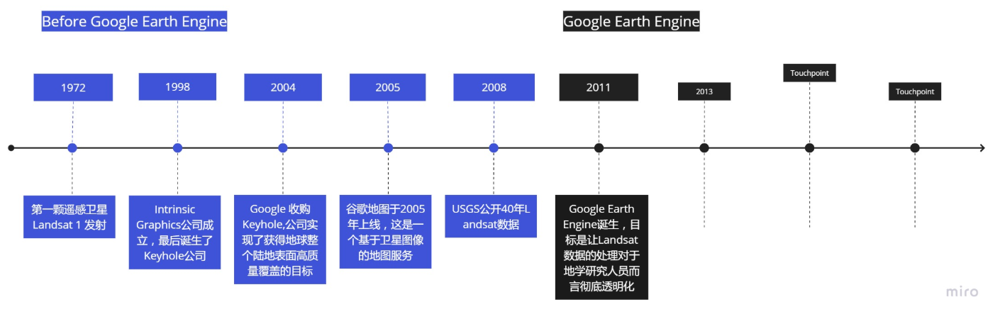

[toc]
Google Earth Engine
参考
网络资源
作者就是这个出来的数据科学家，他的专栏的“地球云计算”是我在中文资源能看到的最好的资源，专栏中的一下文章值得看一下，但是后面没有更新了，所有的新的内容也没有了

GEE相关的最经典的Google Earth Engine: Planetary-scale geospatial analysis for everyone论文的汉译版，但是只翻译了一半，而且有些地方翻译的有问题
比较了几个平台
参考论文
- Google Earth Engine: Planetary-scale geospatial analysis for everyone
GEE最经典的论文
- An Overview of Platforms for Big Earth Observation Data Management and Analysis
比较了相关的几个平台，没来及的看
论文1. Google Earth Engine: Planetary-scale geospatial analysis for everyone
Abstract
Google Earth Engine 是一个基于云计算的星球级地理空间分析平台，它将谷歌庞大的计算能力用于解决各种高影响的社会问题，包括森林砍伐、干旱、疾病、食品安全、水管理、气候监测和环境保护。它在该领域是一个独一无二的综合平台，因为它不仅可以提高了传统遥感科学家分析的能力，还弥补了用户缺乏利用传统超级计算机或大规模商品云计算资源所需的技术能力的鸿沟。
1. Introduction
目前，超级计算机和高性能计算系统逐渐性能过剩，大量级的云计算以商品的形式变得触手可及。与此同时，来自 NASA、 U.S. Geological Survey 和 NOAA 等多个美国政府机构和 European Space Agency 的 PB 级别存档遥感数据已免费对外提供，相应的地理信息数据大量级处理技术（如 TerraLib、Hadoop、GeoSpark 和 GeoMesa）也日臻成熟。
但是要充分利用这些海量数据资源仍然有相当高的技术要求。其中一个主要障碍就是基础的 IT 管理：数据的获取和存储；解析晦涩难懂的文件格式；管理数据库、机器分配、任务和任务队列、CPUs、GPU、网络；使用众多的地理空间数据处理框架等等；
这种负担可能使许多研究人员和业务用户无法使用这些工具，从而限制了研究人员对于海量遥感数据的研究。
针对以上问题，Google Earth Engine（GEE）应运而生。Google Earth Engine是一个基于云的平台，它使人们可以很容易地获得高性能的计算资源来处理非常大的地理空间数据集，不需要先掌握复杂的IT技术。此外，与大多数超级计算中心不同，Earth Engine的设计也是为了帮助研究人员轻松地将他们的成果分享给其他研究人员、政策制定者、非政府组织、现场工作人员，甚至是普通公众。一旦一个算法在地球引擎上被开发出来，用户就可以在Earth Engine的支持下制作系统的数据产品或部署可交互的应用程序，而不需要用户首先成为应用程序开发、网络编程或HTML方面的专家。
由谷歌、卡内基梅隆大学和美国地质调查局联合开发的 GEE 是目前世界上先进的 PB 级地理数据科学分析及可视化平台。GEE 面向用户提供海量卫星影像数据集与地理数据集，包括 40 多年历史卫星影像数据与欧空局的卫星影像数据。同时，GEE 提供基于 JavaScript 和 Python 语言的 API 接口、分析算法与工具，方便用户实现大型数据的处理分析与信息挖掘。
2. Platform overview
Google Earth Engine 提供了多个类别 PB 级的可供分析的数据以及高性能并行计算服务，二者均可通过 API 获取及控制，并且 GEE 集成了基于 Web 的 IDE（Interactive Development Environment）使得快速原型实现和结果可视化成为可能。
Google Earth Engine 的数据库保存了大量的公共地理信息数据，包括各类卫星、航拍得到的光学和非光学波长的观测数据、环境变化、天气和气候的预报及后判、地形数据、社会经济学数据等等。所有这些数据都是经过一定预处理且保证不丢失相关信息的可直接使用形式（ready-to-use but information-preserving）。
用户可以使用和分析来自公共目录下的数据，也可以通过 API 调用数据库操作器来添加自己的私人数据库。该操作器是集成到大型并行处理系统的，能够自动划分算力，提供高通量的分析能力。用户既可以通过一个体量很小的 Client Library，也可以通过在该 Client Library 基础上构建的交互开发环境来直接调用这些 API，如图1 所示。
Fig 1. The Earth Engine interactive development environment用户可以在地球引擎的主页上注册访问，并访问用户界面以及用户指南、教程、实例、培训视频、功能参考和教育课程。虽然之前对GIS、遥感和脚本的经验使其更容易上手。如果有编写脚本的经验会让你更容易上手，但这并不是严格的要求，而且用户指南也是面向用户领域新手的。每个帐户有一个上传个人数据和保存中间产品的配额，任何输入或结果都可以下载供离线使用。

3. The data catalog
Google Earth Engine 公共数据目录是一个多维度 PB 级地理信息数据集。主要包括来自 Landsat、Sentinel-1、Sentinel-2 的地球观测遥感完整存档数据，以及诸如气候、地表覆盖数据等其他环境、地理信息和社会经济学数据（如Table 1 所示）。数据量还在以每天近 6000 scenes（时延约 24 小时）的速度持续增加和更新。用户可以直接使用这些公共目录下的数据，也可以通过 REST 交互界面上传自己的私人数据且可以自由选择是否共享给他人。
Earth Engine 运行在一个轻量级的 “图像” 容器中，使用基于 2D 网络栅格波段的简单且高度通用的数据模型。单一谱段的像素点需在数据类型、分辨率和投影上保持一致，但是图像可以包含任意数量的谱段且一幅图中的谱段不需要有统一的数据类型和投影。每幅图也具有相关键值对的元数据来存储诸如图像的拍摄位置、拍摄时间和条件等信息。
相关的图像，比如同一个 Sensor 产出的数据分成一组，构成一个数据集。数据集的高速筛选和分类能力使得用户可以轻松地在数以百万计的图像中搜索和选择满足特定区域、时间和其他标准的数据。
导入 Earth Engine 的数据都会经过预处理以达到快速并有效查询使用的目标。
首先，图片按照原有的投射和分辨率切成瓦片存储到高效且备份的瓦片数据库中。每幅瓦片尺寸为 256×256，这是在载入不需要的数据和预加载额外请求数据之间采取的折衷方案。与传统的 “data cube” 系统不同，这种数据摄入处理能够做到不丢失数据信息：数据仍然保持其原有的投影、分辨率和 bit 位，从而避免了数据在重采样到一个固定网格下而产生解构导致可能会不适用于特定的应用。
另外，为了在计算开发过程中能够快速可视化，每幅图都会对应有降低分辨率的瓦片图组成的金字塔模型存储在对应瓦片图数据库中。金字塔中的每一层都是通过对上一层以 1/2 的比例进行缩减像素采样（向下采样）得来的。在向下采样时，连续值谱段通常采取平均采样模式，而对离散值谱段（例如分类标签）使用最小、模式化、最大或固定采样模式中的一种进行采样。当只需要一幅图的一部分数据在降低分辨率下计算时，只有最合适的金字塔层级下相关的瓦片图才会从数据库中被调取出来供使用。这种指数级缩量方式使得数据能够在不同量级都能够使用而又不用耗费大量的存储，同时也能够满足基于 web 的地图展示。
Table 1. Frequently used datasets in the earth engine data catalog

4. System architecture
Earth Engine 是建立在 Google data center 环境下的一系列技术基础之上的。其中包括 Borg 集群管理系统、Bigtable、Spanner 分布式数据库、Colossus（Google File System 的接班者）以及用于并行管道计算的 FlumeJava 框架。另外，Earth Engine 还可以与 Google Fusion Tables（一种基于 web 的数据库，支持带有属性的点、线、多边形等几何类型的数据表）进行互操作。
Fig. 2. A simplified system architecture diagram.如图 所示。Code Editor 和第三方 Web Apps 可以借助客户端库通过 Web REST API 来向系统发送交互或批量请求。即时请求通过 Front End servers 进行处理并向 Compute Master 发送下一级请求。Compute Master 则负责在 Compute Servers 资源池中进行分布式计算的任务规划。Batch Computation 的运行逻辑与此基本一致，只不过是通过 FlumeJava 框架来管理分布规划。支持这两个计算系统的是一系列的数据服务，包括 Asset Database（存有每幅图的元数据并具有高效筛选能力）。前面提到的 Borg 集群管理软件则负责管理系统的每个组件和每项服务在多用户之间的负载均衡。任何单一用户的请求失败只会导致重新发起查询请求而不会对系统造成其他影响。
向 Earth Engie 发送的请求是基于功能进行整合和求解的。用户通过从 Earth Engine 的 800 多个函数中选取自己需要的组合起来构建自己的数据或数据处理请求，这里面既有用于地理信息处理的简繁不等的数学函数，又有机器学习、图像处理等相关的操作函数。这个算法库使得用户可以通过图像代数方法很轻松地处理图像数据，并且支持高阶的函数比如：map（）和 iterate（）（二者均支持对一系列图像应用随机函数）、reduce（）（用来计算按照区域、滑窗、时域、光谱或其他形式组织的统计数据）。在客户端库中包含的各种类型的函数和算法。
该库的基于图像的函数的大部分是对每个像素进行代数运算，在每个频段或频段之间的基础上运行，涵盖整数和浮点数学运算，逻辑比较，位操作，类型转换，条件替换和用于处理像素数组值化的多维数组操作。另外还包括常见的像素操纵函数，例如表查找，分段线性插值，多项式求解和普遍存在的归一化差异等。该库利用几个预制的机器学习工具包，可以轻松访问 20 多种类型的监督分类，回归和无监督集群，以及用于准确性求解的混淆矩阵操作。对于机器视觉任务，可以使用常见的基于内核的窗口操作，例如卷积，形态操作，距离和纹理分析，以及简单的基于邻域的操作，例如梯度，斜率，宽高比和连通性。其他功能还包括图像和波段元数据操作，投影和重采样操作，屏蔽和裁剪，图像到图像位移和配准以及遥感应用常用的各种专用工具，包括约束光谱分离，区域增长和成本映射操作等等。
用户可以组合这些库函数以构建希望执行的计算描述。该计算描述最终以有向非循环图（DAG）的形式呈现给 Earth Engine，其中每个节点代表一个单一函数或数据访问器的执行，并包含命名函数参数的键 / 值对。实质上，这是一个纯函数式编程环境，而 Earth Engine 利用了函数式语言常用的标准技术，例如参考透明度和惰性求值，以实现显著的优化和效率提升。
用户使用客户端库（目前可用 Python 和 JavaScript 语言）编写 Earth Engine 程序，允许用户使用熟悉的程序式编程范式来描述如何处理图表。客户端库为图像、集合和其他数据类型（如数字，字符串，几何和列表）提供代理对象。用户脚本操纵这些代理对象，这些对象记录操作链并将它们组装成能够表达完整计算的 DAG。然后将此 DAG 发送到 Earth Engine 服务进行求解。
DAG 的求解是通过一系列的图表转换实现的。转换后的子图表如果可能的话会立即进行进一步求解来实现贪婪简化，从而避免冗余计算以及任何并行计算不可用的地方。比如，在子图表中表达式 3+7 会立即被简化成 10 这种值的形式。图中的其他节点会被扩展，例如当求解一个指向图像集合的节点时，它会被扩展为一个图像序列以便后续处理批量化执行。表示复杂处理操作的节点可以采用下一节中描述的分布式处理的几种策略中的任何一种。
Earth Engine 旨在支持快速，交互式探索和分析空间数据，允许用户平移和缩放结果来每次查看图像的一个子集。为此，Earth Engine 使用惰性计算模型，该模型仅允许计算满足当前请求所需的特定部分来进行输出。
举个例子，比如说用户可能希望计算两个季节合成图像之间的差异，进而突出显示由于气候或者积雪引起的变化情况。最简单的实现方式就是通过 Earth Engine 的客户端库拉取两个复合图像的差集。
Listing 1. Computing the difference of median composites from two seasons.此代码创建了两个过滤的集合，其中一个是 11 月，12 月和 1 月的所有 Landsat 8 图像，另一个是 6 月，7 月和 8 月的所有 Landsat 8 图像。首先计算每个数据集中每个谱段的时域插值（目的是为了最小化云和云阴影的影响），然后减去所得到的复合图像结果来计算值的变化。该计算描述的 DAG 表示如图 所示.
The DAG produced for Listing 1传统（非惰性）计算环境可能会在处理表达式后立即开始计算一个或两个复合材料的像素，这通常需要提前将输入数据集预处理为公共地图投影，分辨率和感兴趣区域。
相反，Earth Engine 采用了不同的方法：它推迟计算输出像素，知道它清楚了解到这些结果是在什么样的情况下是必须的。例如，如果结果当前显示在交互式地图上，则地图的缩放级别和视图边界可以动态地决定输出的投影和分辨率，并且可以将像素计算限制为仅可查看的像素。或者，如果结果当前要被用作另一计算的输入，则该计算可以请求所需像素的适当投影，分辨率和边界。此信息用于动态地自动重新采样和重新投影输入数据，从而可以快速可视化结果或在更复杂的计算中使用该表达式，而无需用户预先指定需要哪些像素。默认情况下，使用输入的最近邻重采样来对所请求的输出投影进行重新投影和重采样（从每个输入的下一个最高分辨率金字塔等级中选择像素），以保持频谱完整性。但是，当用户对如何管理这种重投影有偏好时，他们可以选择精确控制投影网格，并可以选择双线性和双三次采样模式。
这种方式更有助于采用交互模式和迭代模式来开展数据挖掘和算法开发。一旦用户完成算法的开发并想要大规模应用，他们可以向 Earth Engine 提交一个批处理请求来计算得到完整结果并在 Earth Engine 中实例化为一副图像或者是可供下载的多幅图像、表格甚至是视频文件。
Table 2. Earth Engine function summary


5. Data distribution models
Earth Engine 库中的功能使用多种内置并行化和数据分布模型来实现高性能。每种模型都针对不同的数据访问模式进行了优化。
5.1. 图像瓦片处理
在遥感中使用的许多光栅处理操作是局部的：任何特定输出像素的计算仅取决于某个固定距离内的输入像素。比如例如频带数学计算或频谱解混，以及诸如卷积或纹理分析的邻域操作等针对但像素的操作。通过将区域细分为区块并独立地计算每个区域，可以很容易地并行处理这些操作。处理每个输出图块通常需要为每个输入仅检索一个或少量图块。这与金字塔输入和合理的缓存相结合，可以在任何要求的比例或投影中快速计算结果。如前所述，输入会根据需要随时重新投影以匹配投影输出的需求。当然，如果用户确定不希望使用向下采样或重新投影输入，则可以在输入的投影和比例中明确指定计算方式。
大多数基于图块的操作都是使用两种策略中的一种在 Earth Engine 中实现的，具体取决于它们的计算成本。 针对成本较高的操作以及一次性计算整个瓦片具有显著优势的操作，会将结果写入瓦片尺寸相匹配的输出缓冲区。 瓦片通常为 256×256 像素，以匹配输入预处理的瓦片大小。
对于成本低的单像素运算，是通过在一个可直接相互调用的图表中执行图像处理的界面中按照每次一个像素来进行。这种结果目的是为了充分利用这些操作在 Java 虚拟机（JVM）环境中执行的优势，该环境具有即时（JIT）编译器，编译器负责提取并编译重复发生的函数调用序列。结果表明，在多数情况下，原始图像操作的任意链式操作都可以像手工编译的代码一样有效地执行。
5.2. 空间聚合
正如某些类别的计算本质上是局部的，其他类别本质上是非局部的，例如区域或全局统计的计算，光栅到矢量的转换，或者采样图像以训练分类器。 这些操作或它们的一部分通常仍然可以并行执行，但计算最终结果需要将许多子结果聚合在一起。 例如，计算整个图像的平均值可以通过细分图像，在每个部分上并行计算和计数，然后对这些部分和计数求和来得到所需结果。
在 Earth Engine 中，这些类型的计算使用分散 - 聚集模型作为分布式进程执行。需要执行聚合的空间区域会被划分为子区域分配给分布式算力资源池中的算力单元以便进行批量求解。 每个算力单元获取或计算所需的输入像素，然后运行所需的累积操作以计算其部分结果。 这些结果将被发送回主计算器进行此计算，该计算将它们组合并将结果转换为最终形式。 例如，当计算平均值时，每个算力单元将计算总和与计数，主运算收集并汇总这些中间结果，并以总和除以总计数得到最终计算结果。
5.3. 流式聚合
处理大型遥感数据集的另一个常见操作是时间序列分析。应用在空间上的相同统计聚合操作也可以应用于计算整个图像堆栈中随着时间变化的像素级变化情况。 这些操作都是通过瓦片组合来实现的。以前述方式使用延迟图像求解并行计算得到每个瓦片的输出。在每个瓦片图内，针对每个像素都会执行聚合操作。来自输入图像集合的像素数据是批量请求的，并且通过单像素聚合器进行一次性 “流式传输”。 与输出瓦片相交的所有输入处理完成后，就会在每个像素处都应用最终转换以生成输出结果。
对于具有小中间状态的聚合（比如计算最小值），该分布模型可以做到快速且有效。但是对于不具有中间状态的聚合来说，可能就会非常耗费内存（比如计算 Pearson 的相关性，就需要在计算最终结果之前在每个像素上都存储完整的数据序列）。不过，只要瓦片的大小是明显小于完整图像的，那么即使是非常大的数据集合，流式传输仍然可以做到非常快。例如，对于 Lansat5、7、8 的完整数据集堆栈，包含超过 500 万张图片，在任意一点都只有少于 2000 张瓦片的深度，平均来看其实只有 500 张的深度。
5.4. 缓存以及常见的子表达式消除
Earth Engine 中的许多处理操作的成本和数据密集度都非常高，因此避免冗余计算将回事非常有价值的。例如，在地图上查看结果的单个用户将触发对输出区块的多个独立请求，所有输出区块经常依赖于一个或多个公共的子表达式，例如大空间聚合或监督分类器的训练等。为了避免重新计算先前已经请求的值，使用子图的散列作为高速缓存键将成本较高的的中间结果存储在分布式的高速缓存中。虽然多个用户可能共享缓存中的项目，但两个独立用户独立地进行相同查询的情况并不常见。但是，单个用户在增量算法开发期间重复相同的查询并因此受益于这种缓存机制就是非常常见的了。在单个查询的分布式执行期间，高速缓存还用作共享存储器的形式，存储对应于查询的子图的中间结果。
当对相同计算的后续请求到达时，较早的计算可能已经完成或者仍可能正在进行中。在开始成本高昂的操作之前，会优先去检索缓存并返回之前计算的结果。为了处理早期计算仍在进行中的情况，所有计算都是通过少量计算主服务器发送给分布式算力单元的。这些服务器会在任何给定时刻跟踪群集中正在执行的计算。当新查询到达时，如果它依赖于某些正在进行的计算，该查询将会直接加入原始查询序列中去以等待计算完成。如果计算主机出现失败，则正在进行的计算的处理可能会丢失，这种情况下可能会允许启动冗余计算，但前提是在现有计算任务完成之前就重新请求查询。
6. Efficiency, performance, and scaling
地球引擎利用常规的图像处理的Java即时编译器（JIT）的优势来优化每个像素操作链的执行。为了评估JIT编译器带来的效率提升，我们进行了一系列的实验来比较三种执行模式的性能：使用JIT编译器在Java中运行一个计算图。 使用JIT编译器在Java中执行一个计算图；使用一个类似的在C++中的通用包运行一个图；最后，编写了专门的本地C++ 代码，所有相同的调用是直接进行的，而不是通过一个图，从而避免了函数的虚拟化。五个测试案例，每个案例都测试了不同类型的图像计算图，结果如下
- SingleNode: 一个简单的图，其单一节点由一个图像数据缓冲器组成。这个测试简单地计算了一个缓冲区中所有数值的总和。
- NormalizedDifference: 这个图计算两个输入缓冲区的差异。这个小图的场景总共包含五个节点：两个输入节点，一个和，一个积和一个商。
- DeepProduct: 一个由64个二进制产品节点组成的链的图，计算65个输入节点的乘积。
- DeepCosineSum: 一个结构与DeepProduct相同的图。但每个节点都计算更复杂的二进制运算cos(a + b)。
- SumOfProducts: 一个计算40个输入的所有成对积的总和的图。这个图有40个输入节点，780个积注，以及一棵由779个和节点组成的树。这里的节点总数比输入节点的数量要多得多，这使我们能够评估原始操作复杂图的性能。我们可以在固定数量的输入数据上评估复杂的原始操作图的性能，这是一个常见的现实世界的场景。
这些测试都是基于 Intel Sandy Bridge 公司的 2.6 GHz处理器的单线程执行环境的配置，在一个256×256像素点上进行的，该配置代表了商业云数据中心环境，并且禁用所有非必要的系统服务以尽量减少剖析噪音。表3的结果显示，在这些测试案例中，5个中有4个使用JIT编译器的效果超过了C++中类似的通用包，其中有1个案例中JIT编译器的效果甚至超过了直接用C++代码写的效果
Table 3. Results from Java JIT vs. C++ efficiency tests.6.1 系统吞吐量性能
在Google数据中心有着丰富的CPU，在该环境下，原始效率虽然也很重要，但是更重要是如何在许多机器上有效的分配复杂的计算，Earth Engine 的大部分性能是基于它有能力代表用户调集和管理大量的CPU。单一的硬件即使通过代码或者查询优化，最终也会达到一个上限，但是可以利用的额外的计算资源很少有限制，从而可以达到更高的上限。
经过实验证明Earth Engine 可以以横向的尺度缩放，如 Fig.4 所示。在这次测试中，两幅大的在这个测试中，两个大型的Landsat 图像集图像被重新投影到一个共同的投影坐标系上， 在每个像素的基础上进行时间上的汇总，并在空间上汇总成一个数字，同时改变每次运行的CPU数量。这两个数据集包括从 2014.1.01 到 2016-12-31 的所有的 Lanssta 8 Level-1T图像，图像覆盖美国本土（26,961个场景，1.21万亿像素）和非洲（77,528个场景，3.14万亿像素）。测试是使用共享的生产资源运行了几天，即使捕捉到自然变化。结果显示，吞吐量与机器的数量几乎呈线性扩展。
Fig. 4. Horizontal scaling tests results.


Application
Earth Engine 正广泛应用于各个领域，涵盖全球森林变化，全球地表水变化、作物产量估算、稻田制图、城市测绘、洪水测绘、火灾恢复和疟疾风险绘图等等不同主题。它还被整合到许多第三方应用中，例如分析物种栖息地范围（Map of Life）、监测气候（Climate Engine）和评估土地利用变化（Collect Earth）等等。这些应用中的一些细节将说明 Earth Engine 的能力是如何被利用的。
Hansen 使用从广泛的数据集中生成的决策树，描述了2000年至2012年的森林范围、损失和增加的特点。他利用从大量的训练数据中产生的决策树和大量的陆地卫星场景中计算出的深层指标，对2000年至2012年的森林范围进行了描述。数据目录支持的过滤操作将当时研究期间的生长季节场景的130万个陆地卫星场景减少到654,178个。这些影像通过云层、云影和水进行筛选，并将其从原始的 Landsat 数字转换为规范化的大气顶部反射率。系统自动处理所有必要的数据访问、格式转换、制图和重新取样。利用 API 中的操作计算输入指标，例如每个波段的百分位值和反射率的线性回归值与图像日期的线性回归。这些指标与训练数据一起。被用来生成决策树，这些决策树被应用于指标来产生最终的输出数据。这些结果被用于出版，并作为地球引擎目录的一部分提供给其他人去进一步分析。
之后许多包括科学界和业务界的其它用户，都成功的在 Hansen 的基础上利用 Earth Engine 产生了其它成果。 Global Forest Watch 将其纳入使用地球引擎的交互式分析应用程序，以进行即时的汇总统计计算。Joshi 使用Earth Engine 来 追踪老虎栖息地的变化，提取每年保护区内的森林损失，并发现最适合野生老虎数量翻番的地区也是保护得最好的地区。
在其它例子中，Lovell 将数百个作物模型的模拟结果与植被指数联系起来，例如绿色叶绿素植被指数（GCVI），这些指数可通过卫星数据进行测量。然后，他们将模拟产量与测量的植物指数和生长季节早期的天气相关联。这就产生了一个早/晚日期的每一对组合的回归系数表。他们在每个像素的基础上使用 Earth Engine 选择早晚的最佳Landsat场景，使用 Earth Engine 的 SimpleCloudScore 功能自动去除多云场景，计算 GCVI 值，最终得到最高GCVI 的场景。一旦为一个特定的像素确定了最好的一对陆地卫星场景，存储在地球引擎和GCVI中的天气数据就可以用来计算预测的产量。这个方法被应用于美国中西部大约675万公顷的玉米和大豆田，计算出2008到2012年的年产量。每年每10,000平方公里的总计算量大约在2分钟内完成。
8. Challenges and future work
使用Earth Engine的一个好处是，用户几乎完全不需要考虑在并行处理中工作的细节。该系统处理并隐藏了如何管理计算的几乎每一个方面，包括资源分配、并行性、数据分配和重试。这些决定纯粹是管理性的，它们都不会影响查询的结果，只会影响查询的速度。从这些细节中解放出来的代价是用户无法影响它们：系统完全负责决定如何运行一个计算。这导致了一些有趣的在系统的设计和使用方面都有一些有趣的挑战。
8.1. 规模化挑战
Earth Engine系统作为一个整体可以管理及其庞大的计算，但其底层基础设施最终是由低端服务器组成的集群。在这种环境下，配置任意大的机器的选项是不可取的，而且对可以带入任何单个服务器的数据量有一个硬性限制。这意味着用户只能通过使用Earth Engine库中提供的并行处理语言来表达大型计算，而一些非并行的操作根本无法在这个环境中有效执行。此外，要求使用Earth Engine 来表达也意味着现有的算法和工作流程必须被转换为使用Earth Engine API 来利用这个平台。
Earth Engine设计的API能轻松的表达极大的计算。例如，它可以只用几行代码就可以请求聚合一个全球8000亿像素的Hansen森林覆盖图：虽然这种计算是很直接简单的，但是只是从存储中检索所有的输入像素也会涉及到大量的资源和时间。通过在广泛的空间尺度上对大型数据集进行链式操作，很容易表达成本相差很多的查询，并描述即使在先进的并行计算环境中也不可行的计算。
由于地球引擎是一种共享的计算资源，因此限制和其他防御措施是必要的，以确保用户不会垄断系统。对于交互式会话，Earth Engine 对请求的最大持续时间目前为270秒、每个用户同时请求的总数量为40，同时一些复杂操作如空间聚合的同时执行次数限制为25。虽然交互式计算有一个时间限制，但是该限制足够在一个单一的工作流程中完成以下工作：检索覆盖加利福尼亚和内华达州一年的所有Landsat 8图像（1177个场景），用它们来计算最大NDVI综合指数，并由此得出17个IGBP土地覆盖等级（73.5万平方公里）中每个等级的平均峰值-NDVI（735000km^2）。这个例子的大部分时间是花在传输全分辨率的空间聚合的原始像素，简单地创建和显示最大NDVI的合成，只需几秒钟就能完成。
当在批处理环境中调用查询时没有限制，在批处理的情况下，更大数量级的工作可以直接运行。但是当一个请求涉及到基于瓦片的计算时，每台机器所能容纳的数量仍然是有限的，因为这些计算不能用目前的数据模型进行流化或进一步的分布。这些内存限制并不会直接的转换为空间和时间上的限制，但是这类请求的最大尺寸有一个经验：每个像素的堆栈深度不超过2000字节。目前RPC和缓冲系统有一个在互动情况或者批处理都存在的额外的限制：缓存的单个对象大小不能超过100MB。这个限制最常发生在聚合操作输出的很大的情况下，当我们提取数据来训练一个机器学习算法时，它可能会限制训练集中的总点数。
批量作业是独立运行的，这使得它们很难对彼此产生负面的影响，但是为了防止垄断，作业仍然使用一个共享的排队系统进行管理，在负荷大的情况下，工作可能会在队列中等待，直到资源变得可用。
8.2.计算模型不匹配
虽然可并行化的操作在遥感领域非常普遍。但是有许多其他的操作是不能并行化的，或者是不能被Earth Engine中的并行计算结构所容纳的。该平台很适合于每个像素和有限邻域的操作，如带状数学、形态学操作、光谱解混、模板匹配和纹理分析，以及这些操作的长链（数百到数千）。它还高度优化了可应用于流式数据的统计操作，如计算图像的时间序列堆栈的统计数据，并且可以轻松地处理非常深的堆栈（eg: 数以百万、亿万计的像素）。但是它对于以下情况表现很差：局部数值可能受到任意距离的输入影响的操作，如分水岭分析或经典的聚类算法；需要同时掌握大量数据的操作，如训练许多经典的机器学习模型；以及涉及长周期迭代的操作，如有限元分析或基于代理的模型。此外，一些数据密集型模型需要大量的数据，而这些数据在地球引擎中并不存在，这可能需要大量的工作来准备数据。
这些计算技术仍然可以在地球引擎中应用。但往往有很大的限制。将Earth Engine扩展到支持新的计算模型是一个活跃的研究和开发领域。用户如果遇到不符合地球引擎计算模型的问题，可以在谷歌云平台的其他地方运行计算。平台中的其他地方运行计算，以利用靠近底层数据的计算，同时还可以利用Earth Engine的数据目录、预处理、后处理和可视化的优势。
8.3.C/S 编程模型
Earth Engine的用户往往不熟悉客户机-服务器编程模型。所以Earth Engine的客户端库试图提供一个更熟悉的程序化编程环境。但这可能导致用户忘记他们不是本地编程，本身并未执行任何计算，这时候会导致一些混乱。整个操作链是由客户端的代理对象记录，并发送到服务器上执行，但这意味着不可能将Earth Engine库的调用与标准的本地的处理习惯混合在一起。这些习惯包括一些基本的语言功能，如依赖计算值的条件语句和循环，以及标准的数值包。用户仍然可以使用这些外部工具，但他们不能把它们直接应用到地球引擎的代理对象上，这有时会导致导致混乱。幸运的是，这些编程错误通常 一旦发现就很容易解决。
值得注意的是，这种风格的编程模型在大规模云计算中正变得越来越普遍，同时它也被用于TensorFlow中构建和执行图。
8.4. 提高技术水平
Earth Engine不仅让监测、跟踪和管理地球环境和资源成为可能，而且变得容易，从而在社会最需要的地方取得一定进展。为了跟踪和管理地球的环境和资源，不仅需要提供大量的数据和计算能力，还需要提供越来越复杂的分析技术的同时也易于使用。
因此，我们正在进行一些实验：整合深度学习技术，并促使可扩展的基础设施（如谷歌计算引擎和BigQuery）能轻松访问。
涉及技术
Introduction 地理信息数据的处理技术： TerraLib、 Hadoop、GeoSpark 和 GeoMesa
The data catalog
- Earth Engine 运行在一个"图像"容器（？）
- 瓦片数据库
- 金字塔模型
- System architecture
- Borg 集群管理系统
- Bigtable
- Spanner 分布式数据库
- Colossus（Google File System 的接班者）
- 并行管道计算的 FlumeJava 框架
- Google Fusion Tables（一种基于 web 的数 据库，支持带有属性的点、线、多边形等几何类型的数据表） 进行互操作
- Compute Master进行任务规划
- 计算描述DAG
- Data distribution models
- Geodata Pipleline：地理数据处理链线，有人喜欢叫工作流（workflow），有人喜欢叫processing（数据处理），都可以。Pipe是从Linux过来的概念，意思是将上一个命令的输出作为下一个命令的输出。这样的话数据处理结果是文件、还是字符流、还是数据库就都被抽象掉了。我很喜欢这个概念，因为遥感数据里也是各种类型文件、各种处理，比较乱，用pipeline比workflow一类的宽泛概念要强得多（流应该是gee中很重要的一个设计）
- 子表达式消除
Efficiency, performance, and scaling
- JIT编译器
Challenges and future work
- C/S 编程模型
- 谷歌计算引擎
- BigQuery
评价
谷歌在构建这个工具方面投入了大量的工程专业知识。它确实是一个令人惊叹且令人印象深刻的平台，并导致了许多重要的科学发现. 当我们在 2013 年第一次开始考虑大地球数据时，我们了解了 GEE，并立即认为这就是未来：我们都会迁移到 GEE。那显然没有发生。虽然 GEE 对许多科学家来说显然是一个有价值的工具，但事实仍然是该平台是封闭的——它不是开源的。它由谷歌控制。他们决定它可以做什么和不可以做什么，哪些数据集可用，如何分配资源等等（他们当然对科学界非常慷慨。）但 GEE 从根本上说是一个卫星图像平台。有许多类型的地球系统数据和分析方法在 GEE 中根本不可能实现，科学界也没有明显的方法来改变这一事实。您也不能在自己的服务器上安装 GEE。
随着封闭平台的发展，很难击败 GEE。但其他人正在尝试。
论文2. An Overview of Platforms for Big Earth Observation Data Management and Analysis
产品演化路径
产品演化路径必然离不开产品的历史，但是设计GEE的历史技术没有找到相关了网络资源

- Graphics 公司使用了什么技术
- Keyhole公司使用了什么技术，Google通过它一下子拥有了巨大的地图服务
- 刚开始 GEE 只是为了 Landsat数据的处理，怎么设计的，用了什么技术
现行技术体系
第二篇论文讲的就是这个，但是还没来得及细看